· Workshop 3D Tiles ·
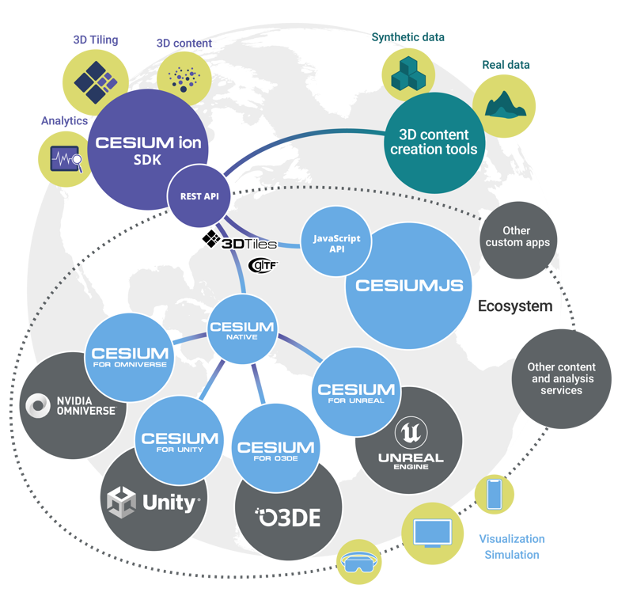
For a detailed overview of the 3D Tiles specification, see: 3D Tiles Reference Card
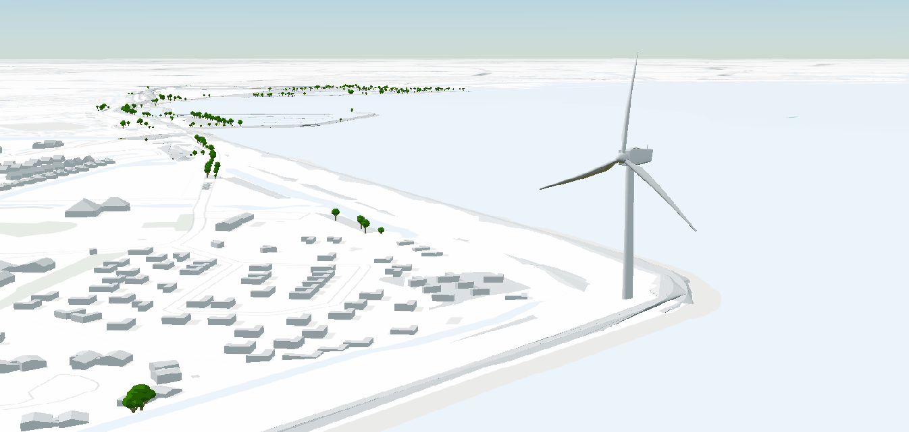
Note: Make sure Docker (https://docs.docker.com/get-started/) is installed and running before continuing.
docker ps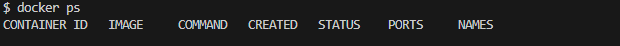
To start the Docker environment, two files are needed: docker-compose.yml and Dockerfile. These files are in the workshop repository.
Copy these files to an empty directory on your local machine, for example c:\3dtiles-workshop. An easy
way to do this is to right-click the link and choose 'Save link as...'
Tip: An alternative way to retrieve the two files is to clone the entire repository via 'git clone'
Open a terminal (cmd, PowerShell or Git Bash) and navigate to the directory where you saved the files
Tip: For ARM64 use docker-compose-arm64.yml and Dockerfile-arm64
To set up the workspace, run the following command from the
directory where the files docker-compose.yml and Dockerfile are located:
docker compose up -d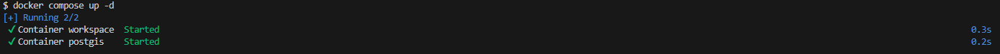
2 containers will be started:
postgis: a PostgreSQL database with PostGIS extensionworkspace: a container with all necessary tools installed (alpine)The two containers run in a separate network and can communicate with each other. The database is accessible from the host machine
via port 5439, the workspace container is accessible via port 8080 (for the web server we will use later).
Tip:For ARM64 use:
docker compose -f docker-compose-arm64.yml up -d Tip: Use the command docker compose down to stop and remove the containers.
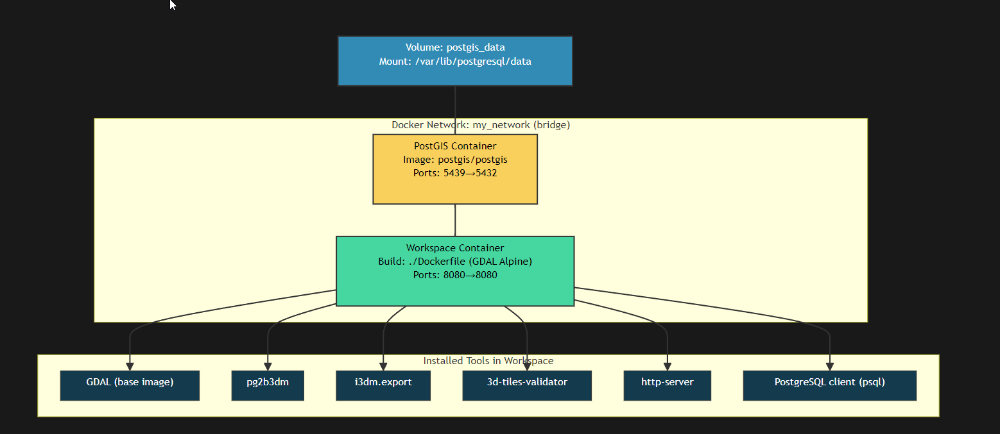
Use username: postgres | password: postgres
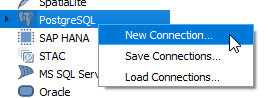
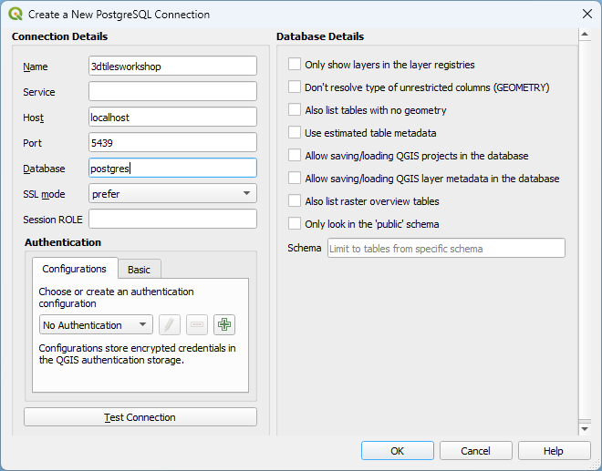
Use the following command to open a shell connection to the workspace container:
docker exec -it workspace bash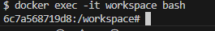
You will land in the /workspace directory. This folder is directly linked via
a volume mapping to the ./container folder on your local
machine. All files you place in ./container are also
available in /workspace, and vice versa.
Tip: Use the command exit or Ctrl + D to
disconnect from the container.
In this part we will:
Tip: See folder 'resultaten' for pre-created tilesets
./container folder.ogrinfo 8-512-888.gpkgThe GeoPackage contains 7 layers, we now only use lod22_3d:
Question: what is the projection of the files?
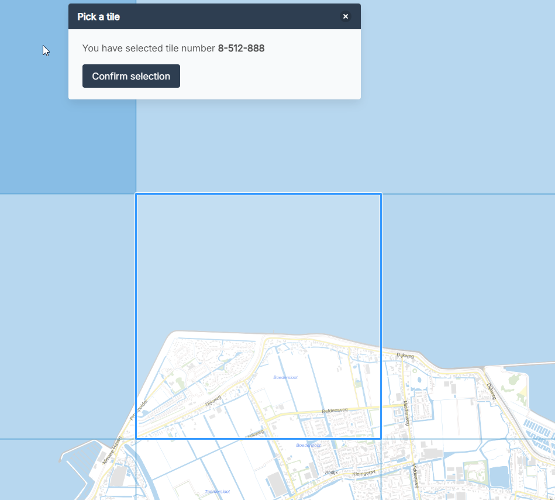
Now we will load the 3D BAG into the database. Run the following commands from the container shell.
ogr2ogr -f "PostgreSQL" PG: 8-512-888.gpkg lod22_3d -nln public.panden_andijk -nlt MULTIPOLYGONZCreate spatial index:
psql -c "CREATE INDEX ON public.panden_andijk USING gist(st_centroid(st_envelope(geom)));" Check that the data was loaded correctly (990 buildings):
psql -c "SELECT count(*) from public.panden_andijk;"pg2b3dm --connection "Host=postgis" -t public.panden_andijk -a identificatie -o ./output/panden -c geomResult: a tileset.json file, a 'content' directory with the 3D tiles in glTF 2.0 format and a subtree folder.
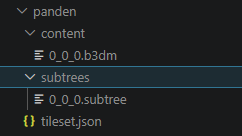
A web server is installed in the Docker container. The web server serves all files from the
/workspace folder. The server runs by default on port 8080.
Start the server:
http-serverWe will now use the CesiumJS Viewer to view the 3D Tiles.
Copy index.html to the container folder. This index.html page contains Javascript code that loads 3D data using the CesiumJS library.
The code loads 4 tilesets:
Open a browser and go to http://localhost:8080
Click on a building to view details; the 'identificatie' attribute will be shown.
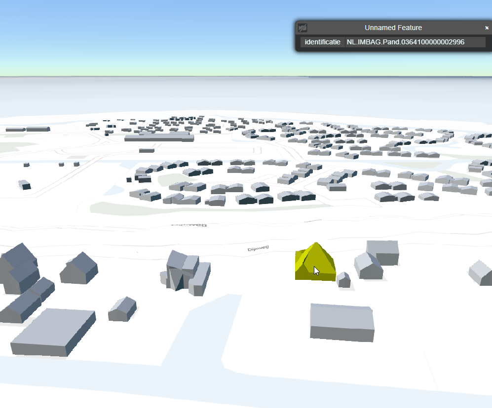
In this exercise we will:
Tip: See folder 'resultaten' for pre-created tilesets
./container folder.ogrinfo /vsizip/d15cz.zipThe zip contains 3 shapefiles:
Good to know: the /vsizip/ prefix before the file path
in ogrinfo allows you to inspect ZIPs.
Question: what is the projection of the files?
Now we will load the DTB point data into the database. Run the following command from the container shell.
ogr2ogr -f "PostgreSQL" PG: /vsizip/d15cz.zip/d15cz_sym.shp -nln public.dtb_punt_andijk -nlt POINTZCheck that the data was loaded correctly (15318 points):
psql -c "SELECT count(*) from public.dtb_punt_andijk;"Create a spatial index for the DTB points with the following SQL command:
psql -c "CREATE INDEX ON public.dtb_punt_andijk USING gist(wkb_geometry)"Create a database view for trees only:
psql -c "CREATE or replace view public.v_dtb_punt_andijk AS
SELECT
RANDOM()*360 AS yaw,
0 AS pitch,
0 AS roll,
(RANDOM()*1.5)+0.5 AS scale,
json_build_array(json_build_object('dtb id',dtb_id),
json_build_object('omschrijving',omschr),
json_build_object('datum',datum)) AS tags,
'tree.glb' AS model,
wkb_geometry AS geom
FROM public.dtb_punt_andijk
WHERE omschr = 'Boom'"Good to know: we give the trees a random rotation and scale to add some variation. Also note that we add 'tree.glb' as a string, which links the 3D model for the tree.
We can draw a 3D model (e.g. a 3D tree model) at each point.
Copy tree.glb to the container directory.
i3dm.export -c "Host=postgis;Username=postgres;Password=postgres;Database=postgres;Port=5432" -t public.v_dtb_punt_andijk -o ./output/dtb_punten --use_gpu_instancing trueResult: a tileset.json file, a 'content' directory with the instance3D tiles in glTF 2.0 format, and a subtree folder.
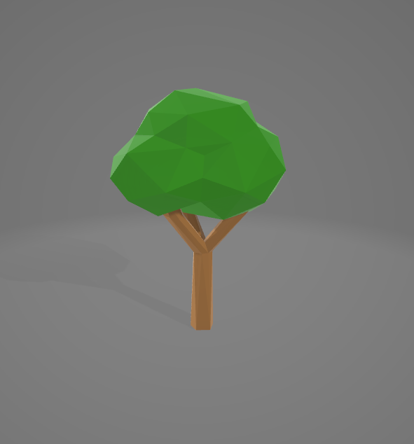
We will now use the CesiumJS Viewer to view the 3D Tiles of the trees.
In index.html add the following code under // todo: add code here
const tilesetDtbBomen = await Cesium.Cesium3DTileset.fromUrl("output/dtb_punten/tileset.json");
viewer.scene.primitives.add(tilesetDtbBomen);Start the web server in the container:
http-serverOpen a browser and go to http://localhost:8080
Click on a tree to view details; the attributes 'dtb id', 'omschrijving' and 'datum' will be shown.
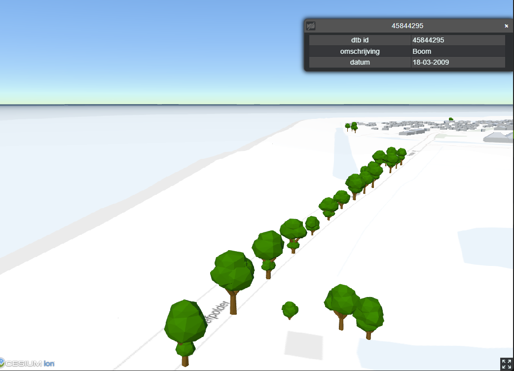
Copy windturbine.glb to the container directory.
Add the following code to index.html
const windturbine = viewer.entities.add({
position: Cesium.Cartesian3.fromDegrees(5.193486,52.754867),
model: {
uri: "windturbine.glb"
},
});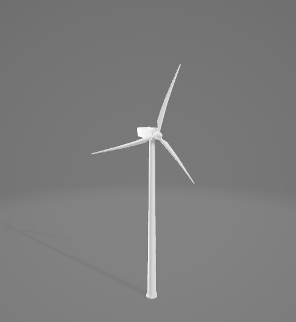
Try to add streetlights from the BGT as Instanced 3D Tiles. The workflow is similar to the trees from the DTB, but now you need to use the BGT data and create a different database view for the streetlights.
Source data: https://app.pdok.nl/lv/bgt/download-viewer/" (choose GML Light) - dataset bgt_paal.gml
DEM data: get from https://www.ahn.nl/dataroom
Put street lights on correct elevation using QGIS Drape (set z value from raster)
In database view use plus_type = 'lichtmast'
Bonus: rotate street lights towards the road using dataset bgt_wegdeel.gml
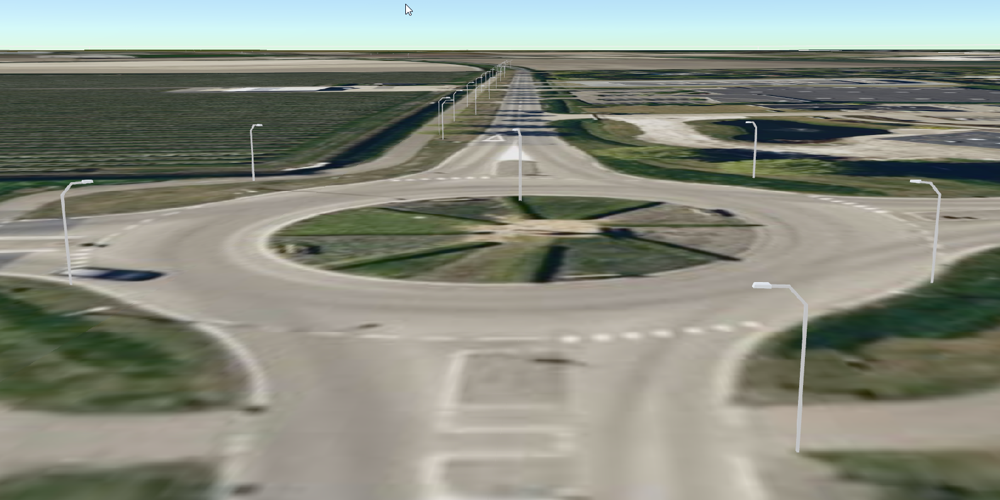
Run the following commands to stop and remove the Docker containers:
docker compose downRemove docker images:
docker rmi 3dtiles_workshop-workspacedocker rmi postgis/postgisRemove database data:
docker volume rm 3dtiles_workshop_postgis_dataWhat have we learned?